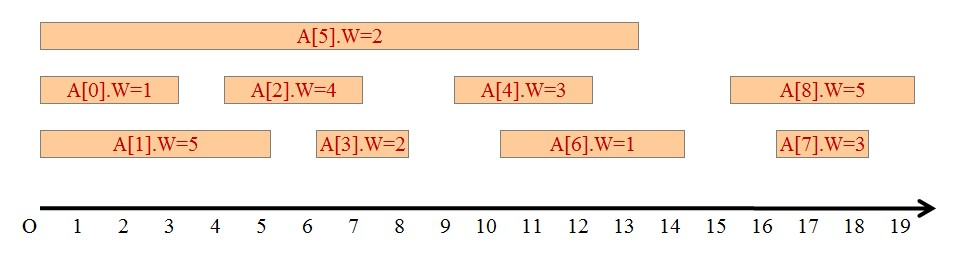
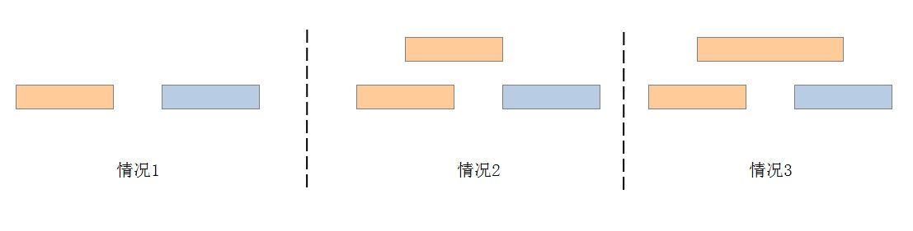

自学算法导论(5)
有点迷糊了，递归、分治、动态规划、贪心…这么多方法啊！硬着头皮看看贪心吧，希望能看出点东西，然后做个大总结 =。=
Design technique: Greedy
来一个特别亲切的例子，排课问题（Interval scheduling problem）。有很多节课程（activity），教室只有一间，同一时间只能上一节课。而这些课程是有权重的，我们希望在有限的时间内，在一个教室内安排足够的课，使得这些课的权重之和尽量大。如下图。A[i]代表第i个课程。A[i].W表示第i个课程的权重。很明显的是，这些课有重合的地方，所以不能把重合的安排在一起。

IntervalScheduling problem: version 1
先建一下模，更利于思考这个问题。
Input：A = {A0,A1,…,An-1}，A代表课程的集合。Ai有三个字段，A[i].S、A[i].F、A[i].W，分别代表开始时间、结束时间、权重。我们要求A里面的元素是按照A[i].F递增排好序的（为什么呢？后面会看到，这样会方便~）
Output：最大的权重之和。
仔细琢磨，发现这是个最优化问题啊！管它什么贪心呢，感觉可以用动态规划解决！尽量往这上面靠拢，看看能不能解决呢~
思索良久，终于有了思路！我们可以选一个k（$i \leq k \leq j$），以此为界限，将课程分为两半，递归计算两半的最优值，然后加上这个界限，也就是A[k].W，就是最终的最优值了！这里面肯定用重复计算的子问题，没关系，动态规划特别喜欢这个，两三行代码搞定！
但是，这里面有一个问题，以k为界限，左半部分是不是就是A[i..k-1]了呢？必然不是！以为有可能有一些课程和A[k]重叠，所以我们要找到左边的，离A[k]最近的且不重合的一个A[k1]。为什么这么好找，关键是因为我们的假设——按照A[i].F排好序啦，有假设真好！对了，如果按照A[i].S排序，貌似就不如现在好弄了。
罗里吧嗦，其实就是找最优子结构，我们找到了。写出递推关系来吧，剩下的就是coding喽~
递推关系：$OPT(i,j)=max_{i \leq k \leq j}\lbrace OPT(i,k) + OPT(k,j) + w_k\rbrace$
具体实现代码如下，核心代码在下半部分。IntervalSchedule的第一个if用来去重，计算过的子问题不再重复计算了。
import random
class Activity:
def __init__(self, S, F, W):
self.S = S
self.F = F
self.W = W
def InitActivities(A):
LENGTH = 10
A.append(Activity(0, random.randint(0,100), random.randint(0,100)))
for i in range(1, LENGTH):
F = random.randint(A[i-1].F, A[i-1].F*2)
S = random.randint(0, F-1)
W = random.randint(0, 100)
A.append(Activity(S, F, W))
def PrintActivities(A):
print 'A\tS\tF\twight\n-----------------------------'
for i in range(len(A)):
print 'A%d\t%d\t%d\t%d' % (i, A[i].S, A[i].F, A[i].W)
def Prev(A, k):
key = A[k]
i = k-1
while i >= 0 and A[i].F > key.S:
i -= 1
if i < 0: return None
else: return i
def Next(A, k):
key = A[k]
i = k+1
while i <= len(A)-1 and A[i].S < key.F:
i += 1
if i > len(A)-1: return None
else: return i
#==============================================
OPT = {}
def IntervalSchedule(A, i, j):
# check overlapping subproblems
if OPT.has_key(str(i)+'-'+str(j)):
return OPT[str(i)+'-'+str(j)]
if i == None or j == None:
return 0
if i == j:
return A[i].W
if i > j: return 0
max = 0
for k in range(i, j+1):
k1 = Prev(A, k)
k2 = Next(A, k)
w = IntervalSchedule(A, i, k1) + IntervalSchedule(A, k2, j) + A[k].W
if w > max:
max = w
OPT.update({str(i)+'-'+str(j):max})
return max
if __name__ == '__main__':
'''use random input
A = []
InitActivities(A)
'''
A = []
A.append(Activity(0,3,1))
A.append(Activity(0,5,5))
A.append(Activity(4,7,4))
A.append(Activity(6,8,2))
A.append(Activity(9,12,3))
A.append(Activity(0,13,2))
A.append(Activity(10,14,1))
A.append(Activity(16,18,3))
A.append(Activity(15,19,5))
PrintActivities(A)
print 'OPT:', IntervalSchedule(A, 0, len(A)-1)
这个时间复杂度和上一节动态规划例子的时间复杂度一样，也是$O(n^3)$。终于解决了这个问题，动态规划还是很厉害滴！
IntervalScheduling problem: version 2
下面我们考虑一种特殊情况，所有课程的权重都一样，即都是1。这个也比较符合我们现实的情况，现在我们需要尽量多的选择课程。当然，上面的动态规划算法必然能解决这个特例了。但是，我们考虑另一种方法，贪心算法。为什么又另外搞出一个算法？因为这个特例使用贪心算法会有更高的效率。所以，现在需要解决两个问题：什么样的情况能够使用贪心、贪心算法的实现。
首先要回顾一个概念。最优子结构性质：当一个问题的最优解包含着它的子问题的最优解时，称此问题具有最优子结构性质。所以，具体有没有这个性质是问题的事，当然，即便是问题真的有这个性质，我们写代码的人也要找到最优子结构。
然后，学习一个新的概念。贪心选择：所求问题的整体最优解可以通过一系列局部最优的选择，即贪心选择来达到。
接下来肯定想知道，动态规划和贪心算法有什么区别？
在动态规划算法中，每步所作的选择往往依赖于相关子问题的解。因而只有在解出相关子问题后，才能作出选择。而在贪心算法中，仅在当前状态下作出最好选择，即局部最优选择。然后再去解作出这个选择后产生的相应的子问题。贪心算法所作的贪心选择可以依赖于以往所作过的选择，但决不依赖于将来所作的选择，也不依赖于子问题的解。正是由于这种差别，动态规划算法通常以自底向上的方式解各子问题，而贪心算法则通常以自顶向下的方式进行,以迭代的方式作出相继的贪心选择，每作一次贪心选择就将所求问题简化为一个规模更小的子问题。（来自这里）
下面回答第一个问题，什么情况下可以使用贪心算法。
对于一个具体的问题，我们怎么知道是否可用贪心算法来解此问题，以及能否得到问题的一个最优解呢?这个问题很难给予肯定的回答。但是，从许多可以用贪心算法求解的问题中。我们看到它们一般具有两个重要的性质：贪心选择性质和最优子结构性质。（来自这里）
对于排课的问题，我们发现了这个问题的最优子结构性质，所以我们可以用动态规划解决。现在，如果找到贪心选择的性质，就可以试着使用一下贪心啦。
我们来找这个贪心选择性质，好绕口啊，就是看看问题，能不能通过局部最优来达到全局最优。
思考啊思考，终于灵光一闪！我们可以这么搞，对于前面的A，里面的课程都是按照结束时间递增排序的，而且不用考虑权重，只要保证安排尽量多的课程就好了。我们怎么安排呢？肯定是先安排尽早结束的课程，这样就几乎不太影响其它的课程了，因为其它课程还没开始呢，安排这个早的没什么问题。当然，也有可能出现这样的情况，有其它的课程和我们选择的课程冲突了，但是这个课程的结束时间要晚一些。这时候我们该先安排哪个课程呢？肯定还是原来我们选的那个结束早的，因为那个结束晚的可能会在后续的安排中和后面的课冲突。所以，最绿色无污染的方法就是优先选择结束时间早的课程。一共有三种情况，如下图。

橘色表示我们现在纠结要不要的选的课程，蓝色表示以后的课程。从图中也很容易看出，不管什么情况，选第二排的橘色风险比较小，选上面的橘色有可能会影响到后面。所以，我们应该选择结束时间小的课程。
下面回到第二个问题，贪心算法的实现过程。哎呦，这个就太简单了，因为我们的A已经根据结束时间排好序了！
权重相同的情况下，实现代码如下：
import random
class Activity:
def __init__(self, S, F):
self.S = S
self.F = F
def InitActivities(A):
LENGTH = 10
A.append(Activity(0, random.randint(0,100)))
for i in range(1, LENGTH):
F = random.randint(A[i-1].F, A[i-1].F*2)
S = random.randint(0, F-1)
A.append(Activity(S, F))
def PrintActivities(A):
print 'A\tS\tF\t\n------------------'
for i in range(len(A)):
print 'A%d\t%d\t%d' % (i, A[i].S, A[i].F)
#==============================================
def IntervalSchedule2(A, i, j):
if i == j: return 1
if i > j: return 0
key = A[i]
k = i+1
while k <= j and key.F > A[k].S:
k += 1
return 1 + IntervalSchedule2(A, k, j)
if __name__ == '__main__':
'''use random input
A = []
InitActivities(A)
'''
A = []
A.append(Activity(0,3))
A.append(Activity(0,5))
A.append(Activity(4,7))
A.append(Activity(6,8))
A.append(Activity(9,12))
A.append(Activity(0,13))
A.append(Activity(10,14))
A.append(Activity(16,18))
A.append(Activity(15,19))
PrintActivities(A)
print 'OPT:', IntervalSchedule2(A, 0, len(A)-1)
其实，用迭代的方式可以实现的。就是对相邻的两个数进行比较大小，不管是递归还是迭代，时间复杂度都是$n$！补充一句，贪心可以通过尝试改进动态规划来实现，也可以不断的尝试，看看能不能行吧。总之，贪心不是你想找想找就能找。
最后引用一句卜老师推荐的“名言警句”：
Beneath every greedy algorithm, there is almost always a more cumbersome dynamic programming solution — CRLS
大致的意思就是说，能用贪心的地方肯定能用动态规划，只不过动态规划太cumbersome！
-- EOF --